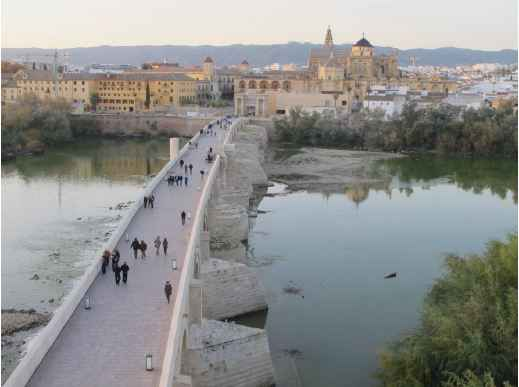

Casco Historico
Las raíces de Córdoba, como núcleo de población se remonta al III milenio a.C., aunque la fundación de la ciudad tuvo lugar a mediados del siglo II a.C. por el pretor Claudio Marcelo. Este magistrado romano levantó un campamento militar que, con el paso del tiempo, se convertiría en una de las ciudades más importantes del Imperio Romano.
Córdoba llegó a ser, en un primer momento, la capital de la Hispania Ulterior y posteriormente, la capital de la provincia Bética.
Bajo el mandato de Augusto, llegó a tomar el título de “Colonia Patricia Corduba”, poniendo de manifiesto la prosperidad y prestigio de que ya entonces gozaba. En este periodo se constata la ampliación del recinto amurallado de la ciudad hacia el sur, hasta prácticamente la orilla del Guadalquivir, incrementando su extensión en 31ha, alcanzando una superficie total de 78ha.
Surgieron edificios monumentales que en la actualidad ofrece a sus visitantes una fiel muestra de este primer esplendor. De aquella época nos encontramos con:
El Puente Romano, que formaba parte de la Vía Augusta y unía ambas orillas del río.

El teatro Romano, cuyos restos se encuentran integrados en el edificio del Museo Arqueológico situado en la plaza de Jerónimo Páez.